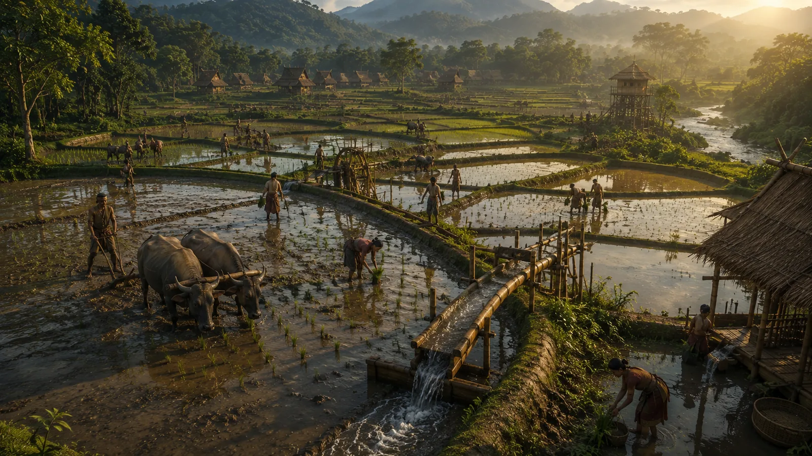

Introduction of Advanced Wet-Rice Cultivation (Sali Kheti)
c. 1240–1250 · The coming of Sukaphaa

Introduction of advanced Tai hydraulic techniques, dyke bunding, canal irrigation, and deep-water transplanted Sali rice, producing an agricultural surplus.
Sources have not yet been catalogued for this record.
People: Chaolung Sukaphaa
Open this scene in the interactive archive · Follow this event on MAP